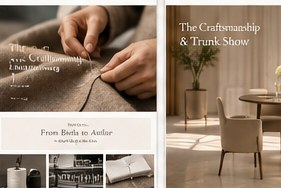

FIT / 2026-11-05
체형별 테일러드 재킷 실루엣, 어깨선의 미학
어깨·허리·길이의 균형으로 나에게 맞는 재킷을 고릅니다.

어깨는 출발점
재킷의 어깨선은 전체 인상을 결정합니다. 구조적인 어깨는 직선적인 조형을 강조하고, 부드러운 어깨는 움직임을 자연스럽게 만들어 줍니다.
단순한 체형 분류를 넘어
같은 키라도 어깨 폭, 상체 길이, 원하는 착용 감각에 따라 최적의 실루엣은 달라집니다. 숫자보다 실제 움직임과 균형을 우선하세요.
수선의 여지
소매 길이와 밑단은 조정 가능한 경우가 있지만 봉제 구조에 따라 범위가 제한됩니다. 구매 전 전문 피팅을 권합니다.
← BACK TO JOURNAL※ 소재 관리법은 제품별 케어 라벨과 전문가 의견을 우선합니다.